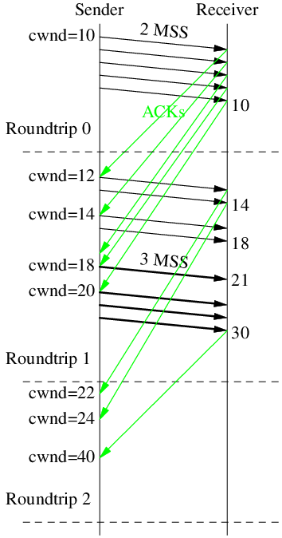

TCP Slow Start
Standard slow start RFC5681:
- Cwnd increases nMSS upon receipt of an ACK covering new data of nMSS.
- Effectively Cwnd doubles every round-trip time, Cwnd = IW * 2 ^ nRTT.
- Exits when a packet loss is detected, sets ssthresh to Cwnd/2, as per Reno CC.
- Linux doesn't increase Cwnd if transmitting is not limited by Cwnd, see
cubictcp_cong_avoid()intcp_cubic.candtcp_reno_cong_avoid()intcp_cong.c).
With Initial Window = 10:

Kernel knobs
$ sysctl -A |grep tcp_.mem
# min default max
net.ipv4.tcp_rmem = 4096 131072 6291456
net.ipv4.tcp_wmem = 4096 16384 4194304
For tcp_wmem[1] == 16K, the default sndbuf is 16K.
Which is greater than 10 (initial window) * 1460 (typical IPv4 MSS),
works well for slow start.
Linux 4.20 changed tcp_rmem[1] from 87k to 128KiB, commit by Yuchung Cheng in 2018-09.
So SYN rwin increased from 43k to 65k (when tcp_adv_win_scale == 1).
With IW=10 and MSS=1.4k, during slow start, the old setting will hit window full on 3rd RTT, limit sent bytes to ~70kB. In new setting, 1.4 * (10+20+40) ~= 100k can be sent in 3RTT.


From linux-stable/Documentation/networking/ip-sysctl.rst:
tcp_adv_win_scale - INTEGER
Count buffering overhead as bytes/2^tcp_adv_win_scale
(if tcp_adv_win_scale > 0) or bytes-bytes/2^(-tcp_adv_win_scale),
if it is <= 0. Default: 1
In other words,
tcp_adv_win_scale |
Advertised window ratio | Max adv window when tcp_rmem[2] == 8M |
|---|---|---|
| 0 | 100% | 8M |
| 1 (default since Linux 3.4) | 50% | 4M |
| 2 | 75% | 6M |
| 3 | 87.5% | 7M |
| -1 | 50% | 4M |
| -2 | 25% | 2M |
| -3 | 12.5% | 1M |
This value was changed in Linux 3.4 from 2 to 1. Here's a brief history:
| Kernel Version | tcp_adv_win_scale |
sysctl tcp_rmem[] |
Initial advertised rcvwnd | Max rcvwnd | commit |
|---|---|---|---|---|---|
| Before 3.4 | 2 | "4096 87380 4MiB" | 65535 = (87380 * 0.75) | 3MiB = (4MiB * 0.75) | |
| 3.4 to 4.19 | 1 | "4096 87380 6MiB" | 43800 = (87380 * 0.5) | 3MiB = (6MiB * 0.5) | 2012-05 |
| Since 4.20 | 1 | "4096 128KiB 6MiB" | 64Ki = (128Ki * 0.5) | 3MiB = (6MiB * 0.5) | 2018-09 |
HyStart++
Stardard slow start ends when a packet loss is detected, but this often causes overshoot.
HyStart++ uses "increase in round-trip delay" as a heuristic to find an exit point before possible overshoot.
- https://datatracker.ietf.org/doc/html/draft-ietf-tcpm-hystartplusplus
- Linux incorporated HyStart++ to CUBIC in v2.6.29, 2009. commit by Sangtae Ha.
- FreeBSD adds HyStart++ to its newreno CC https://reviews.freebsd.org/D32373 in 2021, but not released as of 13.2.
- https://blog.cloudflare.com/cubic-and-hystart-support-in-quiche/